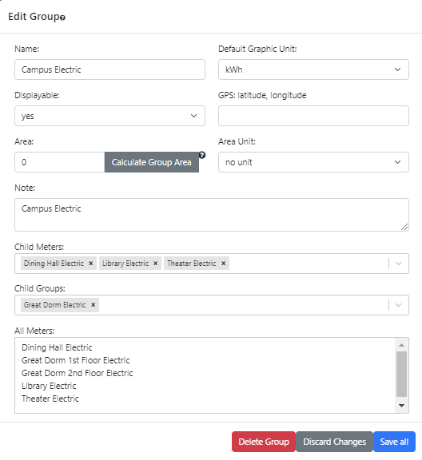
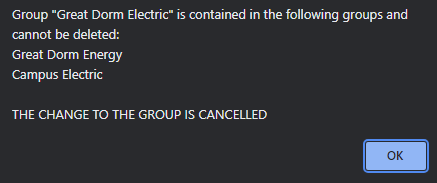
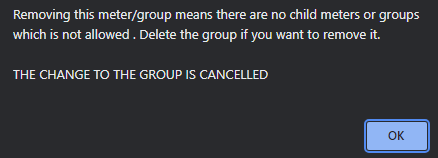

OED Documentation
Group Editing
Version V1.0.0
Documentation overview
Admin documentation
Information
Site Management
Data Acquisition
Site Installation
User documentation
Documentation versions for this page
These features are only available to select people who oversee the OED site (called admins) so this information is not usually of interest to a general user.
The admin group editing popup, shown in the following figure, allows admin users to editing an existing group on an OED site. It is accessed from the admin group viewing page by clicking the "Edit Group" button at the bottom of each group card. 
All information shown on this page is based upon the documentation example.
Usage
The input values are similar to those described for creating groups. One difference is that the current values for the input will be shown rather than the default values and the default values will only apply to some inputs if the input is cleared. The other differences are described below.
The "Delete Group" button (in red as a warning) will remove this group from the site. Because this cannot be undone, OED will show a popup to verify you want to remove this group. For example, suppose the group "Campus All" was being edited and the "Delete Group" button was clicked. The following figure shows the popup that happens where clicking "Delete Group" will delete the group and "Cancel" will not.
If a group included in other groups is deleted then it would disappear from the other groups. If those groups are included in other groups then this effect can ripple across many groups. To avoid this from happening, OED will not allow such a delete to happen. One needs to first remove the group that one wants to delete from all other groups before the delete can happen. OED will use a popup to notify if the chosen group to delete is included in another group. For example, suppose the group "Great Dorm Electric" was being edited and the "Delete Group" button was clicked. This group was already included in the groups "Great Dorm Energy" and "Campus Electric". The following figure shows the popup that notifies one of this situation and the fact that the delete cannot occur. 
Unlike creating a group, when editing a group it may already be a member of another group. For similar reasons to the discussion about deleting a group above, the edits of one group can impact other groups. While OED can sometimes allows these types of edits, it notifies one of the situations present so a decision can be made about continuing to save the edits or not. If the change is forbidden then OED will state that. Some examples of how included meters and groups can impact a group is given on the creating groups page. This discussion will use the following example that is not part of the example data for the documentation pages because seeing these cases requires a different situation.
- Units of type meter
- Elec_kWh
- Elec_$
- Elec_kWh_$
- Conversions, all one way
- Elec_kWh → kWh
- Elec_$ → US $
- Elec_kWh_$ → kWh
- Elec_kWh_$ → US $
- Meters
- Bldg kWh with unit Elec_kWh so compatible with kWh
- Bldg $ with unit Elec_$ so compatible with US $
- Bldg kWh & $ with unit Elec_kWh_$ so compatible with kWh & US $
- Groups
- Bldg some with child meter Bldg kWh & $, default graphic unit kWh and compatible with kWh & US $
- Bldg all with child meter Bldg kWh & $, child group Bldg some, default graphic unit kWh and compatible with kWh & US $. (This is an unusual group because it includes a meter from an included group directly but is done for illustration and OED does not duplicate all meters in groups.)
The possible warnings are:
- If one edits the group Bldg some and adds the child meter Bldg kWh then the compatible units for both groups would become kWh. OED notifies one of this change with the following popup:
If one clicks "OK" then this change will happen and if one clicks "Cancel" then the change will not happen. If one chooses to "Discard Changes" later then neither group will be modified even though the warning was given and one clicked OK.
- Starting from the original example, if one edits the group Bldg some and adds the child meter Bldg $ then the compatible units for both groups would become US $. Since the default graphic unit for both groups is kWh, it must be changed to no unit because kWh is no longer a valid choice. One must manually choose a different unit if that is desired. OED notifies one of this change with the following popup:
The choices are the same as the example above. However, the default graphic unit will be changed for the indicated groups.
- Suppose the original example is changed so the group Bldg all only has child meter Bldg kWh (only kWh compatible) but everything else stays the same. If one edits the group Bldg some and adds the child meter Bldg $ then the compatible units for this group has changed (only US $) and the ones for Bldg all are now empty. OED notifies one of this change with the following popup:
If such an edit was allowed then the group could not be graphed. As a result, OED does not permit this change and the only choice is to accept the fact that the change is reverted.
Note that it is possible to get a mixture of any of the three warnings above in the popup.
- Groups included in other groups cannot wrap back around to the original group. For example, suppose group A includes group B, Group B includes Group C and Group C includes group A. The chain now goes A → B → C → A so the original group reappears in the chain. Formally this is known as a circular dependency and makes determining the members of a group impossible. As a result, OED forbids the creation of such a group. Each time one adds a group to another group during editing, OED checks for this situation. If it occurs, a popup will notify one as in the following figure and as indicated the group that caused the issue will not be added to the list of "Child Groups".
A group cannot contain itself as a child group since that is a trivial example of a circular group discussed above. The menus will stop one from doing that.
OED does not allow a group without any meters included meaning there are no child meters or groups. If one removes the last child meter or group then the following popup will be seen and that change will be eliminated. As indicated, one can delete a group if one wishes to remove it. 
The "Discard Changes" and "Save all" buttons at the bottom of the popup are similar to group creating. However, clicking outside the popup but within the OED web browser window will retain the values entered if you click on the edit button again without leaving the group page. The "Delete Group" button will remove this group but will warn with a popup before doing this as shown in the following figure.
Click "Cancel" to stop the delete and "Delete Group" to delete it.
Details
None